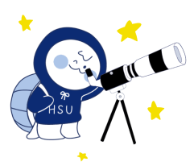

#별조각_소개
안녕하세요, 한성대학교 천체 관측 동아리 별조각 입니다!
별조각은 별을 사랑하는 사람들이 모인 동아리입니다.
망원경으로 직접 달, 별자리 등을 정기적으로 관측합니다.
슈퍼문, 일식, 월식 등과 같이 특별한 천체 행사가 있다면
더욱 생생하게 망원경으로 천체를 관측할 수 있습니다.
천체에 관한 다양한 지식을 얻고 밤하늘을 함께 즐겨 봅시다!
별 보러 갈 부기?
